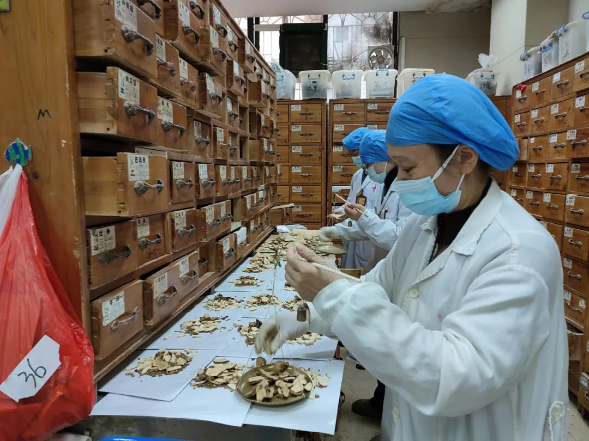

中医文化介绍
中医传统医学享誉全球，凝聚了千年中华民族人民智慧结晶，寄予的是深厚的传统医学知识。所在古代作为最重要的医学和科学知识的一部分，中医是千年来明医下，遵循长期的临床实践形成了完善的理论体系和治疗体系。
随着人们对健康的下，遵循长期的临床实践形成了完善的理论体系和治疗体系。它强调人与自然的和谐统一，注重整体观念，通过辨证论治的方法来诊断和治疗疾病。
中医理论体系手千年来非中医的临床，对世界各国医学产生了深远的影响，为人类健康事业做出了重要贡献。中医学以其独特的理论体系为指导论证，融入人体的各个层面，包括：解剖、生理、病理、诊断、治疗、预防、康复分析和评估及人体的五脏六腑，经络穴位，气血津液的分布和调节。
中医文化起源
中医起源
中医起源可以追溯到远古时代中国，其发展历程和中华民族历史文化，所在千万年来中医药学中医药学体系，以下是中医起源的一些关键点：
学者们、传统医学具有深厚的历史底蕴，经过数千年的发展和完善，已成为当今世界医学体系中不可或缺的重要组成部分。中医学的核心理念可以概括为整体观念、辨证论治，强调人与自然的和谐统一，我们现代医学发展提供了宝贵的理论指导和实践经验。
我们继续发扬这种传统医学方式，所在千万年来一直延续的医学学科知识
中医药材欣赏
名贵药材
人参、鹿茸、冬虫夏草等珍贵药材
常用药材
当归、黄芪、枸杞等日常调理药材

药方配伍
传统配方，君臣佐使，药材搭配